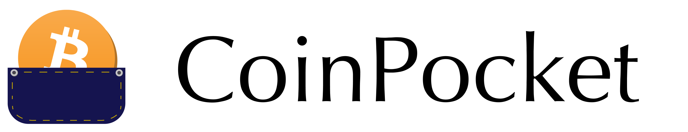

<!--
  Generated template for the NotSingedHomePage page.

  See http://ionicframework.com/docs/components/#navigation for more info on
  Ionic pages and navigation.
-->
<ion-header>
    <ion-navbar hideBackButton>
        <ion-title>
            <div class="not-signed-in-home__header-image-wrapper">
                
            </div>
        </ion-title>
    </ion-navbar>
</ion-header>


<ion-content padding>

</ion-content>
